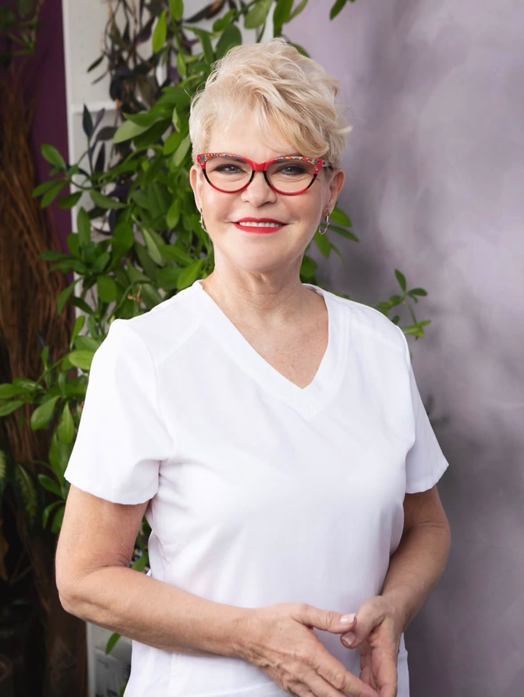

כשמדובר בעור הפנים שלך, את רוצה לדעת שאת נמצאת בידיים הבטוחות והמקצועיות ביותר. בקליניקה של קטיה נווה הטיפולים מבוצעים תחת אבחון קליני מעמיק, תוך התחשבות במצב הרפואי, תרופות, אורח חיים ואיזון הורמונלי, כדי להבטיח מקסימום תוצאה במינימום סיכון.
הטיפולים מתבצעים בקליניקה מקצועית ופרטית, המצוידת במכשירים בעלי תקנים קפדניים ואישורים מבוקרים.
כתובת: פתח תקווה, מוטה גור 9